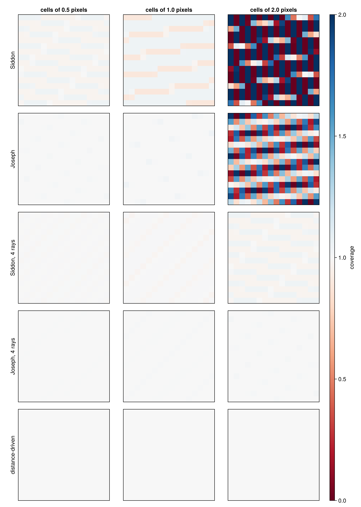
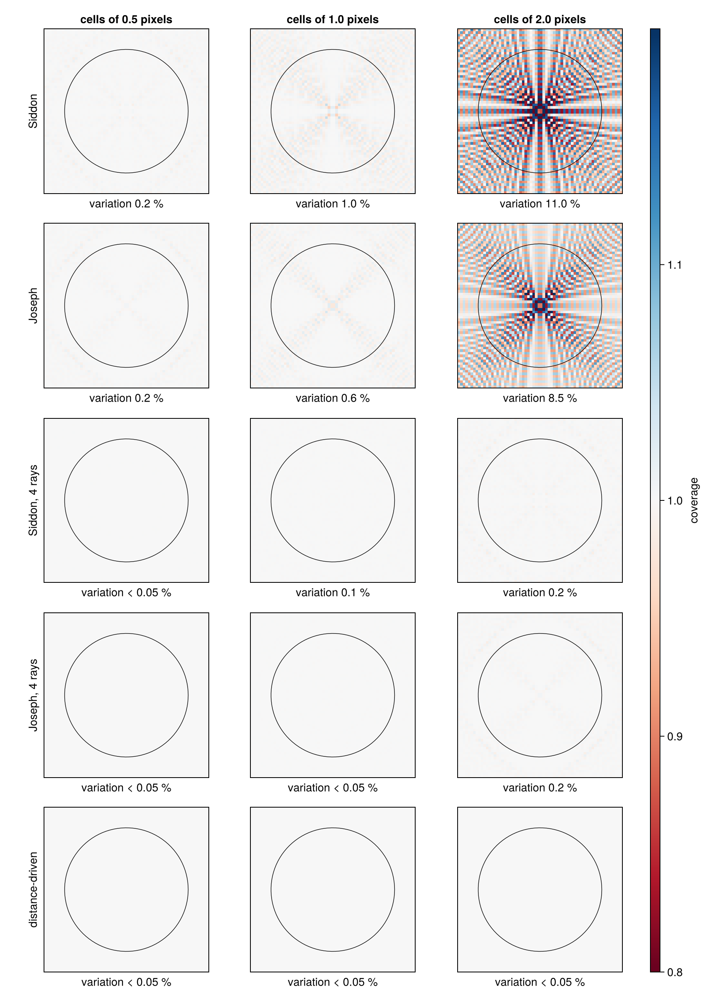

Comparing Projectors
How evenly a ray-driven projector covers the image depends on the ratio of detector cell size to voxel size (Miao 2013). This page compares Siddon's Method and Joseph's Method with one and with several rays per cell (see Use Several Rays per Cell), and the Distance-Driven Method, for cells smaller than, equal to and larger than the pixels of a 2D image, with two checks from Miao (2013): the back projection of one view and of all views of ones. It compares coverage, not accuracy on real data or speed.
using CTOperators
models = [("Siddon", SiddonProjector, identity), ("Joseph", JosephProjector, identity),
("Siddon, 4 rays", SiddonProjector, g -> MultiRay(g, RegularPoints(4, 1))),
("Joseph, 4 rays", JosephProjector, g -> MultiRay(g, RegularPoints(4, 1))),
("distance-driven", DistanceDrivenProjector, identity)]
ratios = (0.5, 1.0, 2.0);One view
The back projection of a single parallel-beam view of ones, at an angle of 0.3 radians, shows how the rays of a view cover the pixels: every pixel gets the summed weights of the rays through it.
This coverage should be the same for every pixel. If rays covered the detector continuously, then adding up the lengths of all rays inside a pixel would slice the pixel into thin parallel strips and sum them: the result is the area of the pixel, at any angle. One ray per cell samples this integral with the spacing du of the cells, so the sum times du should be 1, and any other value is an error of the sampling. The figure shows this scaled coverage for the 16 × 16 central pixels, from 0 (red) over even coverage 1 (white) to 2 (blue); rows without a number of rays have one ray per cell. The angle 0.3 avoids rays parallel to the pixel grid, which hide the effect for cells up to the size of a pixel:

With cells as large as the pixels or smaller, every method covers the pixels nearly evenly. With cells of 2 pixels, one ray per cell misses pixels: Siddon's method leaves many pixels with little or no weight, and Joseph's interpolation softens the pattern without removing it. Four rays per cell fill the gaps: their spacing is then that of cells of 0.5 pixels. The distance-driven method gives 1 for every cell size: in a parallel beam, its footprints cover each layer evenly (see Distance-Driven Method).
All views
The back projection of all 180 views of ones (the column sums, colsums; Miao 2013 calls it pixel support), scaled in the same way and divided by the number of views, shows what remains after the views are added up. Below each panel is the variation, the standard deviation relative to the mean, inside the circle of radius 24 pixels that is drawn; the color window is ±20 %:

With cells of 2 pixels, the coverage varies by 11 % for Siddon's method and 8.5 % for Joseph's, in a cross and a checker pattern around the center; four rays per cell reduce that to a fraction of a percent, and for the distance-driven method it is below 0.05 % at all three cell sizes. Use Several Rays per Cell shows a reconstruction with this kind of pattern.
How many rays
The variation for cells of 2 pixels and regular points, for several numbers of rays per cell:
coverage(P, k) = 2 .* colsums(P(comparison_image(64), MultiRay(comparison_scan(64, 2.0, range(0, pi, 181)[1:180]), RegularPoints(k, 1)); eltype=Float64)) ./ 180
[(rays=k, Siddon=round(variation(coverage(SiddonProjector, k), 24); digits=2),
Joseph=round(variation(coverage(JosephProjector, k), 24); digits=2)) for k in (1, 2, 3, 4, 8)]5-element Vector{@NamedTuple{rays::Int64, Siddon::Float64, Joseph::Float64}}:
(rays = 1, Siddon = 10.96, Joseph = 8.46)
(rays = 2, Siddon = 1.03, Joseph = 0.62)
(rays = 3, Siddon = 1.26, Joseph = 0.4)
(rays = 4, Siddon = 0.21, Joseph = 0.2)
(rays = 8, Siddon = 0.07, Joseph = 0.05)On this example the variation does not fall steadily with the number of rays: for Siddon's method, 3 rays give more than 2.
Summary of the example
- With cells no larger than the pixels, the variation with one ray per cell is about 1 % or less for both ray-driven methods.
- With cells of 2 pixels, it is 11 % (Siddon) and 8.5 % (Joseph) with one ray per cell and below 0.25 % with four, at about four times the computing time (see the benchmarks).
- The distance-driven method covers the pixels evenly in both checks and at all three cell sizes, with one footprint per cell. These checks use a parallel beam.
- In a cone beam, the size to compare with the voxels is the cell size at the object: the cell size divided by the magnification.
References
- C. Miao, "Comparative studies of different system models for iterative CT image reconstruction", master's thesis, Wake Forest University, 2013.
This page was generated using Literate.jl.